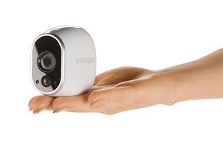

Tell your friends and family how easy it is to set up Arlo cameras or just tell them how cool your new Arlo is
Installing Arlocameras is a breeze. Took me less than 10 minutes because it is truely 100% wirefree. #Arlosmarthome http://bit.ly/arloshare